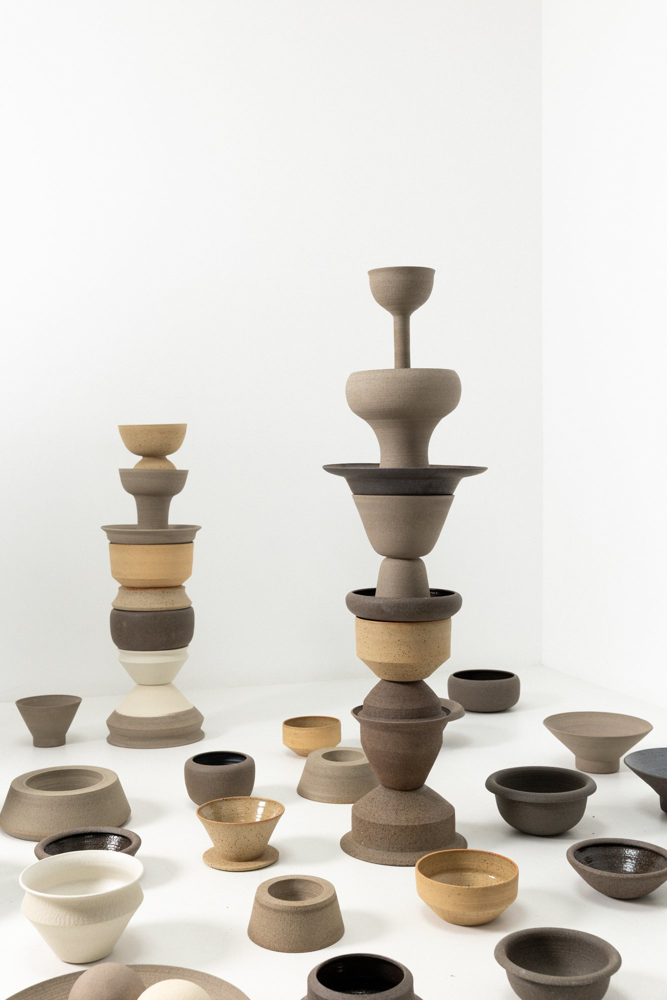

New shop collection
just arrived.
Every piece is handmade and signed by Craig. Once it sells, it's found a new home.
New in

Every piece is handmade and signed by Craig. Once it sells, it's found a new home.